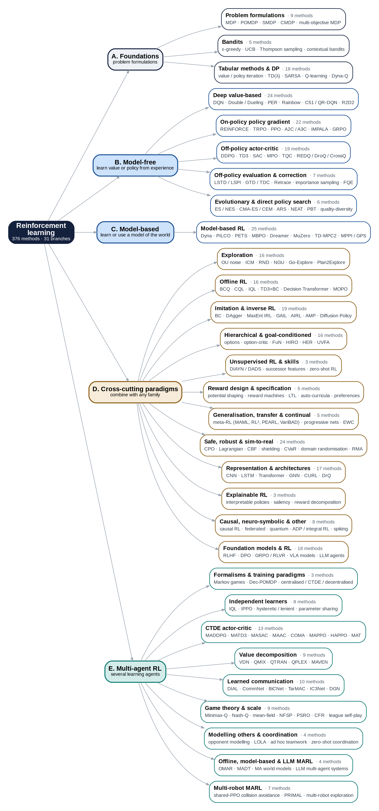

Review de aprendizaje por refuerzo · corpus al 15-10-2026
Todo el estado del arte, conectado
Empieza por el curso si estás partiendo, o recorre el mapa de RL de lo general a lo particular, entra a cada algoritmo para ver de dónde viene y qué papers lo usan, abre cualquier paper para leer su abstract y lo que se extrajo de él, y pregúntale al tutor cuando algo no te quede claro.
El mapa completo

Curso interactivo · 25 lecciones en 5 módulos
Aprende RL desde cero
Un curso completo pensado para tu tesis: de los fundamentos a MARL y al Go2 real. Cada lección trae la idea, una simulación o animación, la matemática, el algoritmo paso a paso, consejos prácticos, qué significa para tu Go2, los papers del corpus que la usan, lecturas y 5 preguntas. Tu progreso se guarda en este navegador.
Mapa de RL
Cada rama del mapa con sus métodos. Toca un método para ver su idea, de qué algoritmo viene, qué vino después y cuántos papers de robótica móvil lo nombran.
Papers de robótica móvil
Los papers incluidos con confianza alta. Filtra, abre uno y sigue los enlaces a sus algoritmos o a papers parecidos.
Aplicaciones de RL
Nueve áreas. Los papers estimados ya están corregidos por precisión: la fracción que de verdad usa RL y es del área, según el extractor. Abajo, los papers confirmados con su problema, algoritmo y resultado.
Lo que dicen los surveys
Reviews de robótica móvil y de las otras áreas, con su alcance, su taxonomía, los retos que nombran y las direcciones que proponen. Sale de los abstracts, así que conviene confirmarlo leyendo el review.
¿Qué algoritmo de RL me sirve?
Responde lo que sepas de tu problema. La recomendación se actualiza al momento y muestra papers del corpus que ya usaron esa combinación.
Tutor
Pregunta lo que quieras sobre RL, los algoritmos o los papers del corpus. El tutor puede buscar en los datos de esta página antes de responder, y te dice de dónde sale cada cosa.
Cada pregunta usa tu cuenta de Claude. La primera vez te pide permiso.